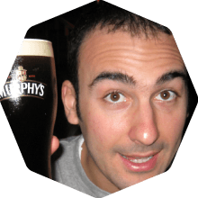
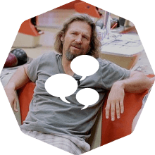

Activities
-
Buggy Ride
Have fun on this off-road adventure across the white sand beaches of Muro Alto, Cupe, Porto de Galinhas and Maracaípe. Provided by PontesTur.
Buy ticket -
Raft Boat Sail
Sail over the famous natural pools of Porto de Galinhas on a traditional raft boat used by local fishermen. Provided by PontesTur.
Buy ticket
Talks
-
Transfer from Recife to Porto de Galinhas
Leaving from Derby Square
Leaving from Recife Int. Airport
Passing through Porto de Galinhas -
Registration
-
Keynote: See You On The Trail!
-
Maintaining a 5yo Ruby project
Simone Carletti
Maintaining a young, small Ruby product is simple, but time passes and your code becomes harder to maintain day after day. This talk illustrates the development techniques, Ruby patterns and best practices we use at DNSimple to develop new features and ensure long-term maintainability of our codebase. More
-
Cryptography for Rails Developers
You know HTTPS keeps your website secure but do you know how? Ruby just released a new version to address a vulnerability with SSL but do you know your app might still be vulnerable? Cryptography is a hard and huge topic and this talk will give you a great introduction. You don't need a background on cryptography, just an open mind! You will learn about the public key cryptography, SSL/TLS and Ruby tips that will make your app secure. More
-
Frontend Choices
Rails was born in 2004, the time of the "Ajax revolution". With the help of a little bit of prototype, Scriptaculous and RJS, Rails made its mark in part because it facilitated creating beautiful and highly interactive web user interfaces in no time at all. Fast forward to 2013. Frameworks like Meteor and Hoodie are capturing increasing mindshare. Are we now in the decade of JavaScript? Is the "Rails Way" still relevant to the frontend? More
-
Coffee Break
-
Writing Your Own DSL Using Ruby
In this talk we'll go through some concepts on the Ruby language that will help us creating our own custom Domain Specific Language. It's a very hands-on talk. We'll play with dynamic classes, dynamic methods, blocks, procs and method chaining, but our main goal is to write (and learn how) our own Pizza Menu DSL. More
-
POROs to the Rescue
Being tasked with rescuing an ancient codebase and turning it into something workable and manageable is a predicament most of us have already found ourselves in. In the 10 years since we began using Ruby to write Web applications, a lot has changed concerning architectures and design patterns. How do you take your code in a time travel from the olden days to more current practices such as POROs, lean models, presenters and decorators? This talk will walk you through some easy practices that can make that trip less bumpy and allow you to survive to tell the story. More
-
Concurrent-Ruby: Ruby in the Concurrent World
Rumor has it that you can't write concurrent programs in Ruby. People once believed that the world was flat and we all know how that turned out. Between the native threads introduced in MRI 1.9 and the JVM threading available to JRuby, Ruby is now a valid platform for concurrent applications. What we've been missing — until now — are the advanced concurrency tools available to other languages like Clojure, Scala, Erlang, and Go. More
-
Object Oriented Design, Rails and Why You Should Think Twice Before Leaving the Rails Way
The Ruby community has been bombarded by a plethora of discussions about software design best practices. Acronyms such as SOLID, DCI and SOA are up in the community and all them promise to materialize the ghost of maintainability. What few of these discussions present is that applying these principles and techniques fervently also impacts the software maintenance.
In this talk I will present some of these concepts and show the symptoms that they can cause in yours projects if applied incorrectly. More -
Coffee Break
-
25 Minutes of Semantic Web
The promise is: you'll understand in 10 minutes why use Semantic Web. The following 15 minutes of the talk will be used to show 15 applications using the concepts of Semantic Web, one per minute :-)
-
Panel: The Rails Way vs. Trailblazer
R. França, C. Antonio, C. Fernandes & N. Sutterer
Organizing and structuring Rails applications has been an ongoing discussion for years in the community. While some find in necessary to introduce new abstraction layers, indirection and encapsulation for a sustainable architecture, others defend we shouldn't abandon the Rails Way for the sake of conventions and compatibility.
In this panel both members from Rails core as well as the creator of Trailblazer are gonna discuss both approaches, their point of views, why they choose their way, and why they still can be friends. More -
Transfer from Porto de Galinhas to Recife
Leaving from Summerville
Arriving at Recife Int. Airport
Arriving at Derby Square
Passing through Porto de Galinhas